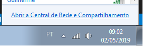

Trocar IP da Máquina
1º
Abra a 'Central de Rede e Compartilhamento'*

Caso não consiga abrir clique em 'Windows + R' para abrir a janela de comando do Executar e digite 'Control.exe /name Microsoft.networkandSharingcenter' e clique em 'OK'
2º
Selecione sua conexão atual

3º Clique em 'Propriedades'

4º Selecione 'Protocolo TCP/IP Versão 4 (TCP/IPV4)' e clique em 'Propriedades'

5º Informe o endereço de IP ou DNS desejado e clique em 'OK'